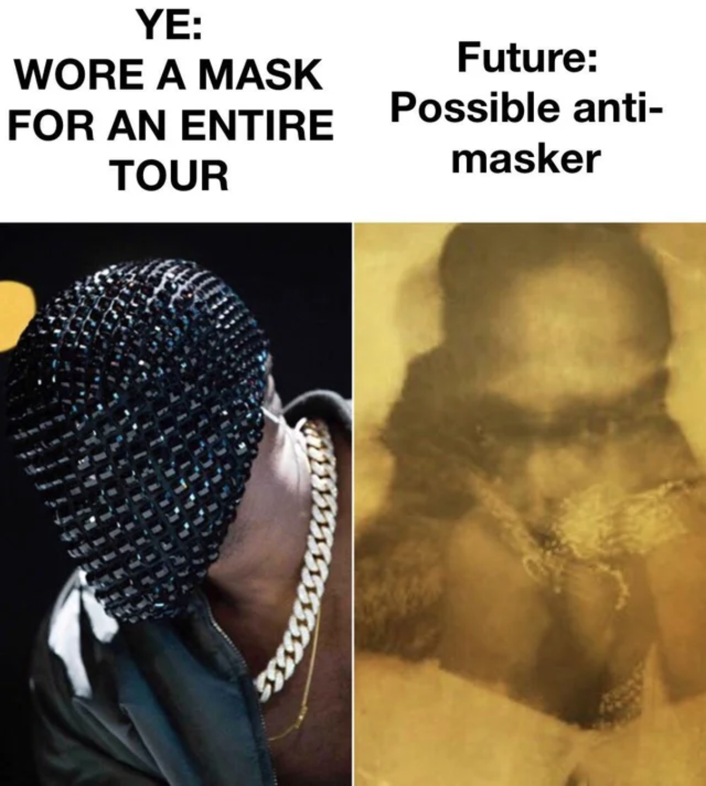

My most recent successes has been on r/kanye and r/Snowboarding.
My post on r/kanye was my original meme featured below, gaining 5.8k upvotes and 77 Comments.

My post on r/Snowboarding was an intentionally controversial snowboarding photo with the caption “Help! Why does switch carving feel better than regular carving?”. This combination of image and title invited Redditors to thrown in thier two cents and interact with my post. This post gained 822 upvotes and 86 comments.

The community on Reddit allows for rapid prototyping and an exponentially growing audience who are all interested in a specific niche. Reddit has been a great tool to help shape the content I have created over my academic career.